Префектура Хёго · Кобе, Минотани · ночлег
«Грандом Кобе Тэнку»: глэмпинг в куполах на холмах над Кобе
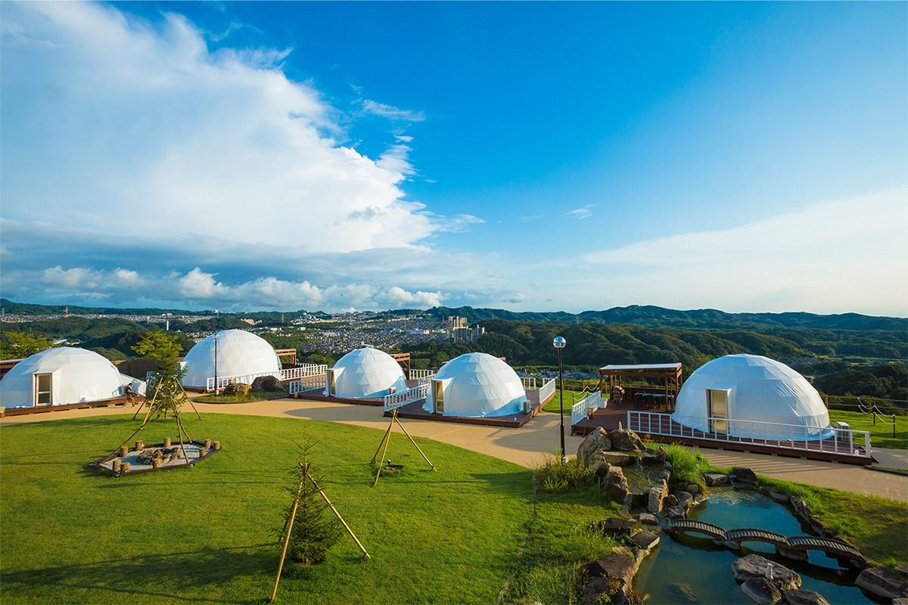
В двадцати минутах от шумного центра Кобе начинаются холмы, леса и поля района Минотани. Здесь, на склоне с видом на закат, стоят белые купола глэмпинга «Грандом Кобе Тэнку».
Место
Купола в горах над городом
Глэмпинг «Грандом Кобе Тэнку» (GLAMP DOME) открылся в августе 2020 года и стал первым в городе Кобе местом, где можно ночевать на природе с удобствами отеля. Слово «тэнку» по-японски значит «небесный простор», и название себя оправдывает: купола стоят на открытом склоне, и над ними ничего, кроме неба.
Территория находится в районе Минотани, на северной стороне гор, которые отделяют портовый Кобе от сельской глубинки. От Санномии, главного транспортного узла города, сюда около 20 минут, а вокруг сохранились леса и поля. Купола разбросаны по газону, между ними тропинки, костровая площадка и небольшой ручей.
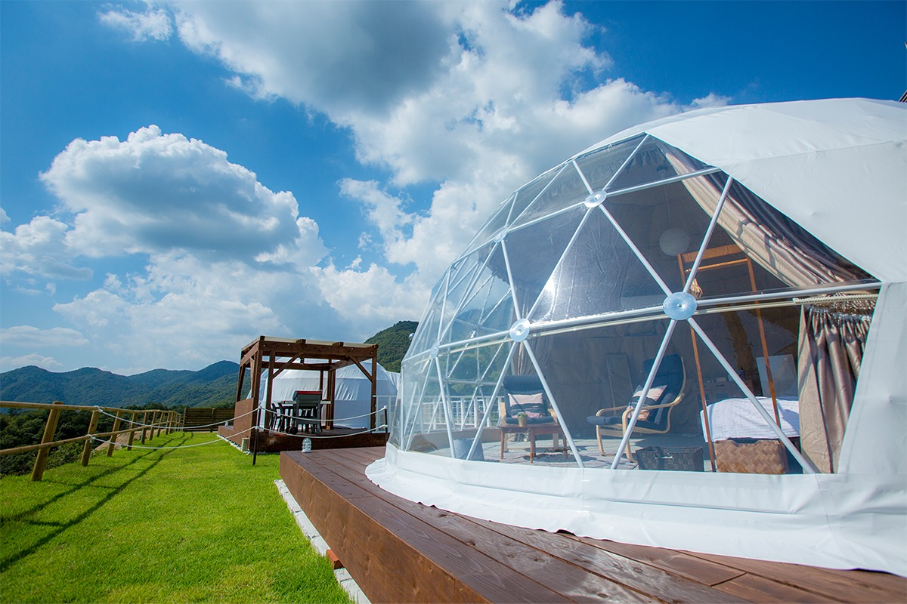
Гостей селят в купольных палатках, а вечером можно дойти до горячих источников «Гинга-но ю» в соседнем отеле. Купание в онсэне после ночи у костра стало одной из главных причин, по которым сюда едут.
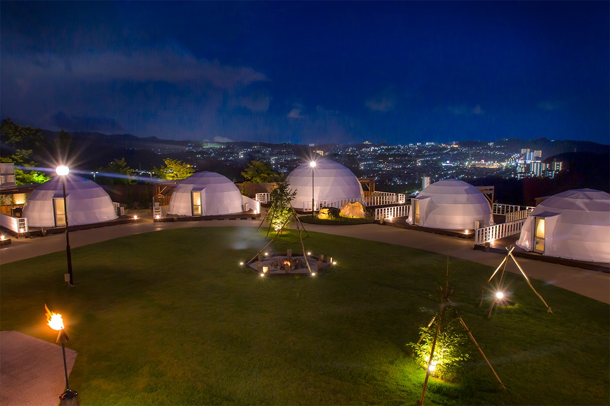
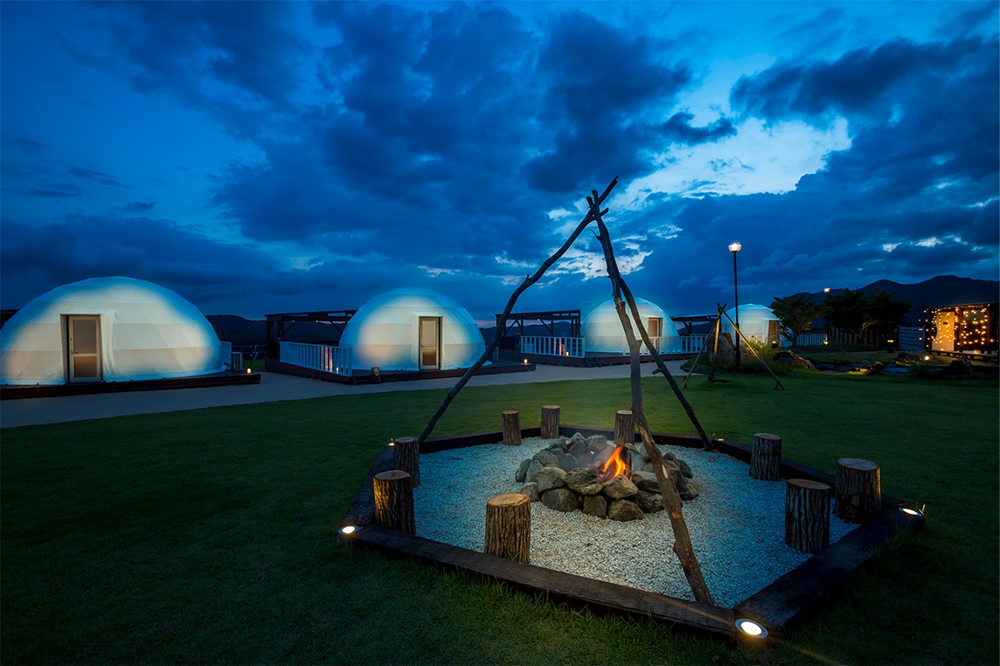
Премиум
Новые купола 2021 года
Глэмпинг быстро стал популярным, и 20 марта 2021 года на территории появились три новых купола премиум-класса. Для них выбрали самое высокое место на западном краю участка, откуда лучше всего видно закат. Окрестные леса и холмы Минотани служат здесь пейзажем за окном: смотреть на них можно прямо из палатки или с собственной террасы.
Самый большой из новых куполов называется «Премьер-лаунж». Его диаметр 10 метров, это один из крупнейших купольных шатров в Японии. Внутри около 75 квадратных метров и восемь односпальных кроватей: здесь ночуют восемь человек, а при необходимости и десять. Такой купол рассчитан на большие компании.
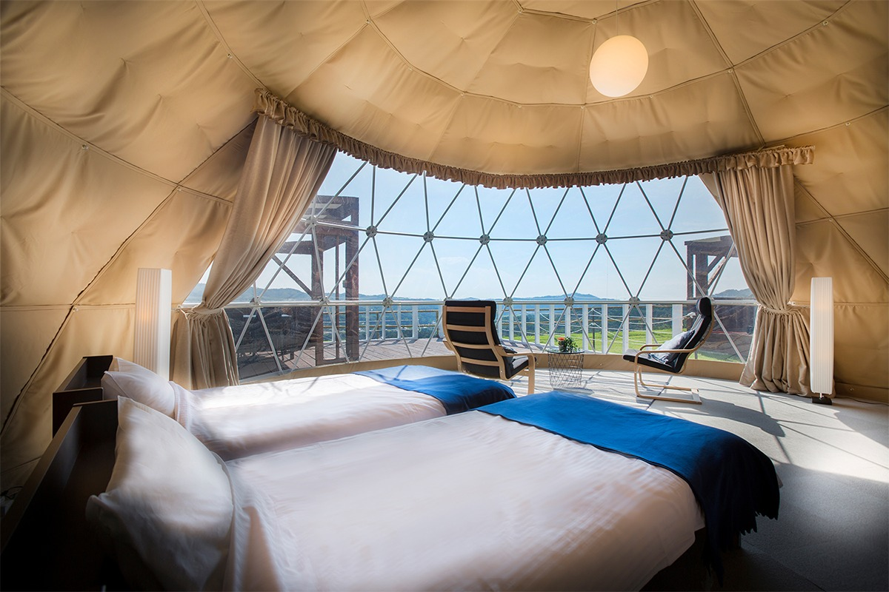
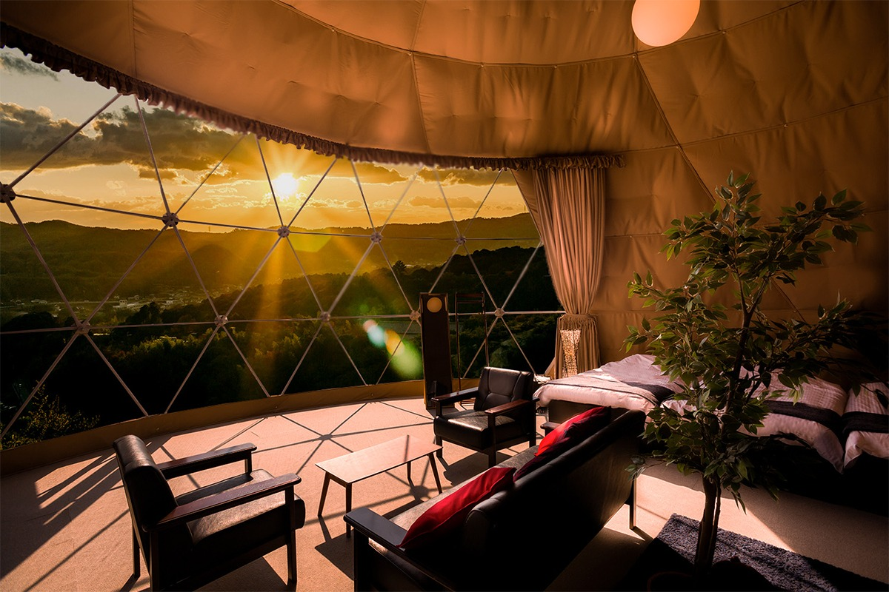
К «Премьер-лаунжу» примыкает своя терраса с креслами, газовым грилем для барбекю, проектором и личным кострищем, так что вечер у огня проходит без соседей. В куполе есть кондиционер, холодильник, фен и вай-фай.
Купол «Премьер-гарден» меньше: 7 метров в диаметре, около 38 квадратных метров и четыре односпальные кровати. Он удобен для семьи. Терраса, гриль, кресла и кострище здесь тоже свои, а внутри то же оснащение, что и в большом куполе.
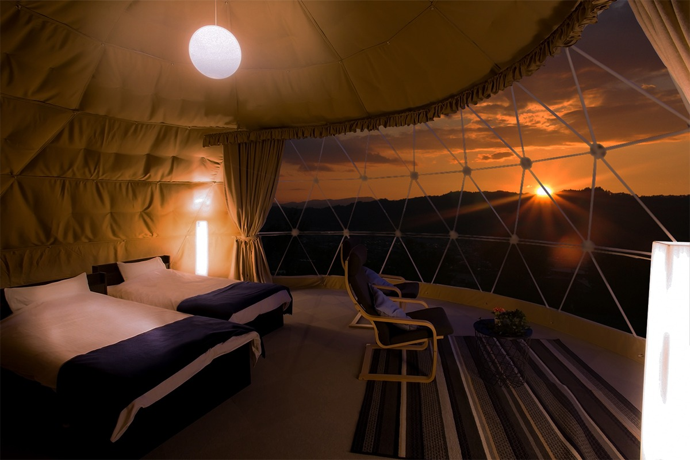
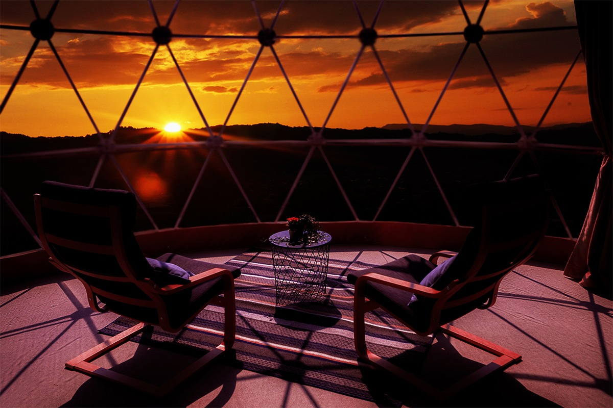
Самое ценное в новых куполах это вид. За вечер пейзаж меняется несколько раз: сначала золотой закат над лесом, потом сумерки, а ночью над головой столько звёзд, сколько в городе не увидишь.
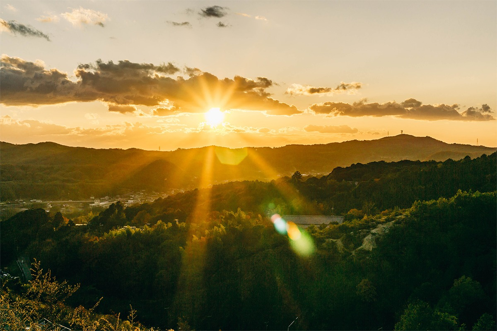
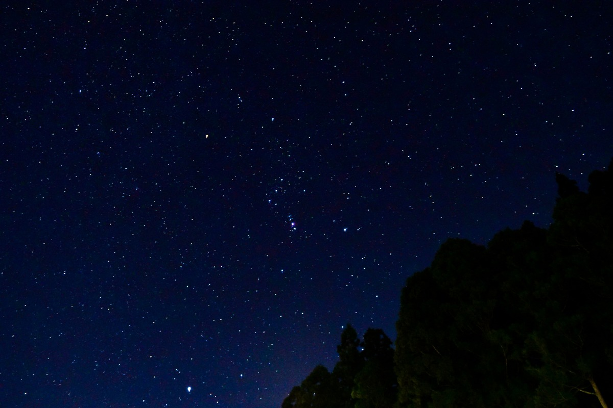
Еда
Барбекю, которое привозят к палатке
Ужин здесь это «глэмпинг-барбекю», как и в остальных куполах. В наборе продукты Кобе и окрестностей: сосиски из местной свинины «Кобе порк», осьминог и морской окунь из Внутреннего Японского моря, местные овощи. Всё привозят к террасе в выбранное время уже подготовленным, остаётся только пожарить.
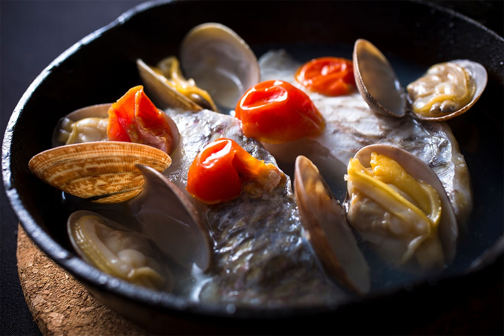
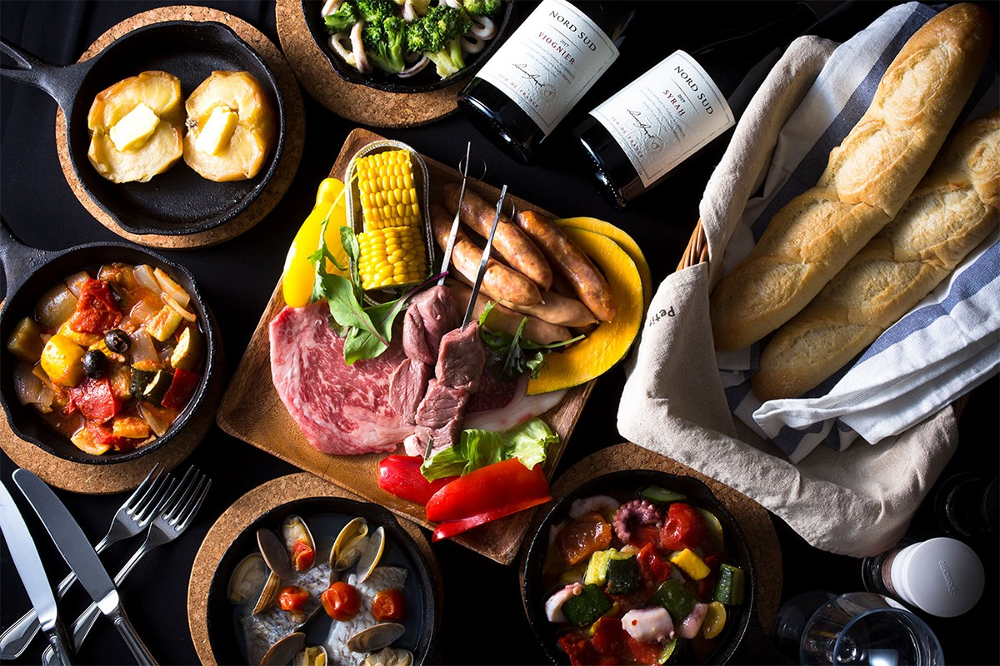
Можно приехать и без ужина. Тогда берут напрокат гриль и жарят то, что привезли с собой.
Онсэн
«Гинга-но ю»: горячий источник с видом на ночные огни
Название источника «Гинга-но ю» переводится как «Купальня Млечного Пути». Он работает в отеле «Минотани Грин Спорт Отель» рядом с глэмпингом, и гости куполов могут им пользоваться. Вода поднимается с глубины 1200 метров и идёт в купальни без повторного использования. Японцы считают, что вода с кислотностью выше 7,5 pH полезна для кожи, а здесь она 8,5.
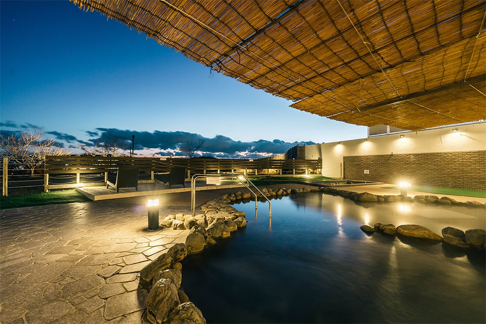
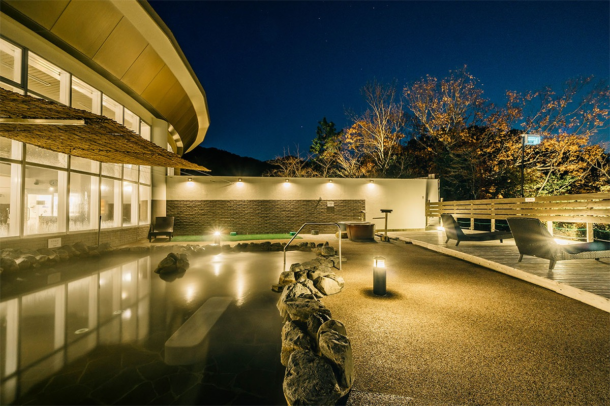
Кроме большой открытой купальни здесь есть купели-бочки, водопадный душ, крытая общая купальня, ванна, в которой можно лежать, бассейн с холодной водой и сауна. Гости глэмпинга могут искупаться и утром, с 7:00 до 9:00 (по данным 2021 года).
«Грандом Кобе Тэнку»
- Адрес
- префектура Хёго, Кобе, район Кита, Ямада-тё Харано, 1-1
- Выходные
- вторник (в праздники, в новогодние дни, на «Золотую неделю» и в школьные каникулы весной, летом и зимой работают)
- Номера
- 11 купольных палаток пяти типов
- Как добраться
- на машине около 10 минут от развязки Минотани скоростной дороги Хансин; на метро Кобе до станции Танигами (линия Хокусин), оттуда около 15 минут на бесплатном автобусе по предварительной записи